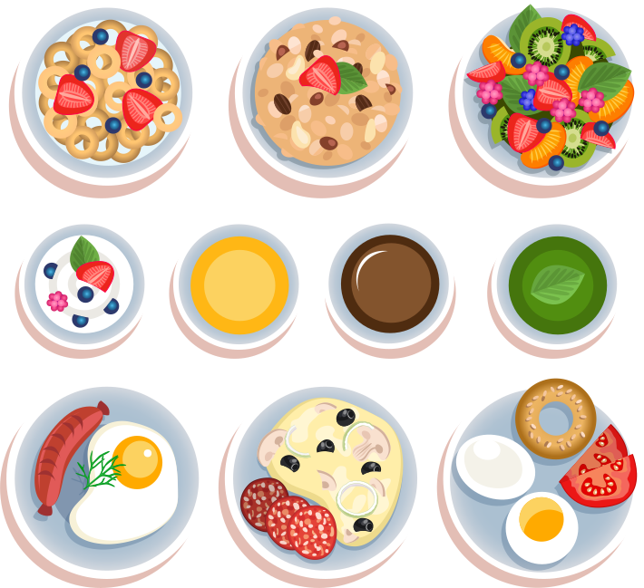
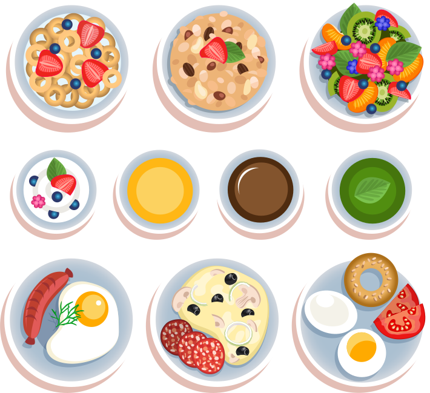

Que faire pour le dîner ?
Comment leur faire manger de tout !
Les produits de saison.
Fini le gaspillage, nos conseils !
Sodexo s'engage.

Communiquez avec nos experts.
présente
Merci de renseigner l'établissement de votre enfant !
Allons ! Je ne travaille pas dans cet établissement.
Voyons en quoi je peux vous aider ! Suivez moi.
Que faire pour le dîner ?
Comment leur faire manger de tout !
Les produits de saison.
Fini le gaspillage, nos conseils !
Sodexo s'engage.
Communiquez avec nos experts.
Entrée: Macédoine de légumes
Plat: Marmite de poisson à l'orientale
Légume: Boulgour
Laitage: St Bricet
Dessert: Fruit de saison
Ingrédients:
Placer les tomates cerises au réfrigérateur au moins une demi-heure avant de préparer la recette.
Dans une petite casserole, l'eau puis le sucre.
Chauffer à feu moyen, jusqu’à obtention d’un caramel blond.
Ôter la casserole du feu et la placer éventuellement au dessus d’un bain-marie, afin que le caramel ne durcisse pas immédiatement.
Piquer les tomates, les plonger dans le caramel puis dans les graines de sésame.
Pour finir: Les disposer sur une assiette légèrement huilée pour qu’elles refroidissent.
Les déguster dans les heures qui suivent et ne pas les entreposer au réfrigérateur sous peine de voir la couche de caramel tomber des tomates sous l'effet de l'humidité ambiante.
Ingrédients:
Précuire la pâte (percée avec une fourchette) 5 min à 230°C.
Pendant ce temps, couper les tomates en rondelles de 3 mm d'épaisseur. br>
Sortir la pâte précuite du four.
badigeonner le fond de moutarde de Dijon (la classique fait l'affaire) en mettre suffisamment pour que le fond en pâte ne se voit plus.
Disposer les tranches de tomates. faire plusieurs épaisseurs.
saupoudrer d'herbes de Provence + 2 pincées de sel.
1 cuillère à soupe d'huile d'olive.
Enfourner pour 20 min à 230°C puis couvrir avec papier d'aluminium pour 20 min supplémentaires.
Après ces 20 min, enlever le papier aluminium et laisser cuire encore 5 min porte du four ouverte.
Délicieux avec une salade verte.
Ingrédients:
Eplucher et hacher les oignons. Eplucher et hacher les gousses d'ail.
Mettre la moitié des oignons dans la chair à saucisse. Ajouter l'ail, le sel, le poivre et un peu de persil.
Couper le haut des tomates et les évider. Poivrer et saler l'intérieur. Mettre la farce à l'intérieur et remettre les chapeaux.
Mettre le reste des oignons dans un plat avec la chair des tomates.
Mettre les tomates farcies dans le plat. Parsemez d'un peu de thym et mette une noisette de beurre
sur chaque tomates.
Faire cuire au four chaud à 180°C (thermostat 6) pendant 1 heure environ.
Servir avec du riz.
Comment lui faire manger des:

Là où les plus jeunes préfèrent les carottes rapées, ces dernières ne font parfois pas toujours l'unanimité !
En effet, les plats avec des carottes cuitent sont plus consommés chez les enfants plus agés.
Ainsi, pour que le légume soit consommé facilement, amusez notre fine bouche en mettant en scène la carotte, la préparation de la nourriture joue un rôle important dans sa consommation par la suite.
(Sodexo s'engage à servir des produits locaux et de saison, dans tous ses restaurants. Découvrez nos recettes en cliquant dessus)
Ingrédients:
Faire ramollir le beurre en morceaux.
Ajouter en remuant avec un fouet (dans l'ordre) le sucre en poudre, les œufs un par un, la farine tamisée, la levure, le zeste de deux oranges et le jus d'une orange. Beurrer le moule.
Cuire à four moyen environ 40 min (faites le test de la lame de couteau pour tester la cuisson qui prend parfois plus de temps).
Démouler en sortant du four (conseil : glisser une lame de couteau tout autour et retourner sur un plat. Laisser refroidir un peu et enlever ensuite le moule).
Glaçage : Cuire à feu doux 5 min le sucre glace et le jus de 3 oranges.
Arroser le gâteau de sirop sur toutes les faces en le retournant délicatement. Dégustez frais.
Le gâteau peut se préparer la veille et se conserver une nuit au frigo).
Ingrédients:
Faire ramollir le beurre en morceaux.
Ajouter en remuant avec un fouet (dans l'ordre) le sucre en poudre, les œufs un par un, la farine tamisée, la levure, le zeste de deux oranges et le jus d'une orange. Beurrer le moule.
Cuire à four moyen environ 40 min (faites le test de la lame de couteau pour tester la cuisson qui prend parfois plus de temps).
Démouler en sortant du four (conseil : glisser une lame de couteau tout autour et retourner sur un plat. Laisser refroidir un peu et enlever ensuite le moule).
Glaçage : Cuire à feu doux 5 min le sucre glace et le jus de 3 oranges.
Arroser le gâteau de sirop sur toutes les faces en le retournant délicatement. Dégustez frais.
Le gâteau peut se préparer la veille et se conserver une nuit au frigo).
Ingrédients:
Faire ramollir le beurre en morceaux.
Ajouter en remuant avec un fouet (dans l'ordre) le sucre en poudre, les œufs un par un, la farine tamisée, la levure, le zeste de deux oranges et le jus d'une orange. Beurrer le moule.
Cuire à four moyen environ 40 min (faites le test de la lame de couteau pour tester la cuisson qui prend parfois plus de temps).
Démouler en sortant du four (conseil : glisser une lame de couteau tout autour et retourner sur un plat. Laisser refroidir un peu et enlever ensuite le moule).
Glaçage : Cuire à feu doux 5 min le sucre glace et le jus de 3 oranges.
Arroser le gâteau de sirop sur toutes les faces en le retournant délicatement. Dégustez frais.
Le gâteau peut se préparer la veille et se conserver une nuit au frigo).
Ingrédients:
Faire ramollir le beurre en morceaux.
Ajouter en remuant avec un fouet (dans l'ordre) le sucre en poudre, les œufs un par un, la farine tamisée, la levure, le zeste de deux oranges et le jus d'une orange. Beurrer le moule.
Cuire à four moyen environ 40 min (faites le test de la lame de couteau pour tester la cuisson qui prend parfois plus de temps).
Démouler en sortant du four (conseil : glisser une lame de couteau tout autour et retourner sur un plat. Laisser refroidir un peu et enlever ensuite le moule).
Glaçage : Cuire à feu doux 5 min le sucre glace et le jus de 3 oranges.
Arroser le gâteau de sirop sur toutes les faces en le retournant délicatement. Dégustez frais.
Le gâteau peut se préparer la veille et se conserver une nuit au frigo).
Avant d’aller faire les courses, faites une liste en vérifiant ce qu'il reste dans le réfrigérateur et les placards, et en planifiant les menus pour la semaine à venir.
Privilégiez les produits en vrac et au détail.
Dans les magasins comme à la maison, faites attention aux dates limites de consommation des produits.
En fonction des dates limites de consommation, rangez devant ou au-dessus les aliments qui doivent être consommés au plus tôt.
Accommodez les restes de repas pour faire, par exemple, une salade ou un gratin avec des pâtes, des gâteaux pour finir les œufs et le beurre, du pain perdu. Les fruits et légumes abimés, une fois les parties gâtées enlevées, peuvent servir pour des soupes, des gratins de légumes, des tartes, des compotes.
Nos chefs sont experts dans leur domaine et vous promettent des produits frais et de saison pour vos enfants.
Nous n’engageons que des experts pour la réalisation des plats à destination de toutes nos cantines.
Nos fruits & légumes:
Leur fraîcheur et leur provenance sont très importantes, achetés chez nos agriculteurs locaux. Pour exemple, une société familiale de produits frais ne cesse de nous surprendre par le goût raffiné de ses produits, c'est pourquoi nous entretenons une étroite relation avec. « Ambrogi Foods Distribution » est également bien plus qu'un partenaire, au point de cultiver à notre demande les fruits et légumes que l’on souhaite.
Nos salades:
Cultivés en France, la fraîcheur et la qualité de notre produit est au centre de nos attentions. Dès la cueillette de la salade, les agriculteurs de « producteur de laitues » nous livrent dans nos cuisines et vous assurent un produit de qualité.
Nos salades:
Cultivé en France, la fraîcheur et la qualité de notre produit est au centre de nos attentions. Dès la cueillette de la salade, les agriculteurs de « producteur de laitues » nous livrent dans nos cuisines et vous assurent un produit de qualité.
Nos viandes:
Bovines: 50% d’origine française et 50% d’origine européenne pour la viande Bovine.
Volaille: 85% de notre viande de Volaille vient de France et 15 autres % proviennent de l’union européenne. Des normes de production sont respectées en ce qui concerne les
traitements animaliers.
Nos poissons:
Chez Sodexo, nous vous promettons une minutie sur le choix et sur la conservation de nos poissons. Les contrôles sont réguliés pour assurer aux consommateurs la fraîcheur de nos produits.